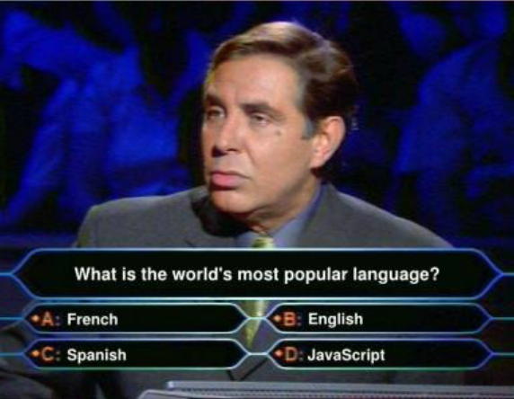
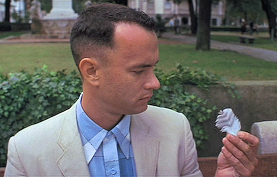

Rich Internet Applications
01.Advanced.JS
JavaScript?

Yeah, JavaScript!
JavaScript 101
Because Forrest Gump is one of those movies ...
JavaScript 101
... and because Robert Nyman made an awesome presentation about it.
JavaScript 101: Variables
Life is like a box of chocolates,
you never know what you're gonna get
Before we dive in
- Variables have a name and a value
-
JavaScript is case sensitive
firstNameandfirstnameare not the same!
- JavaScript is dynamically typed
- When declaring a variable, you cannot specify the type. JavaScript will guess the data type when assigning a value
- viz. a variable given the value
3will be a number
- JavaScript is weakly typed
- A variable will adjust its type when a new value is assigned
- viz. if that same variable is changed to
"Hello"it will become a string
Declaring variables
-
Use the
varkeyword and assign a value to a namevar firstName = "Forrest"; alert(firstName); -
Remember: JavaScript is dynamically typed and weakly typed
// Dynamic typing var firstName = "Forrest"; alert(typeof firstName); // string // Weak typing firstName = 3; alert(typeof firstName); // number
JavaScript Data Types (1)
- JavaScript supports these Primitive Data Types
stringnumber- No real distinction for float/double/int!
booleannull- empty value
undefined- no value given
JavaScript Data Types (2)
- What about
Array? AndDate? And ...?- Well, those are
Objects really
- Well, those are
- And oh, next to
stringyou also have something likeString- The former is the data type
- And the latter is ... an
Object
-
And then you have functions
- Those are functions
- ... but JavaScript treats them as First Class Objects
Not Sure If ...

Let me explain on the next few slides ;)
Global Objects and Literals (1)
-
In JavaScript nearly everything is built upon
ObjectObjectis the core of the language- With this thing, you can declare anything you want if you extend upon it.
-
JavaScript provides some global objects such as
String,Number,Boolean,Array, etc.- Derived from
Object - Define a structure to store something in
-
Have some properties
- eg.
myString.lengthof aString
- eg.
-
Have some specific methods to manipulate/access the stored value
- eg.
myString.toUpperCase()on aString
- eg.
- Derived from
Global Objects and Literals (2)
-
Normally, one would do something like this
var firstName = new String("Forrest");- What you get back is an instance of
String - The type of the instance itself is
Object - The type of the value inside that instance is
string
- What you get back is an instance of
- Let's pull out some code to test this
var firstName = new String("Forrest"); alert(firstName instanceof String); alert(typeof firstName); alert(typeof (firstName.toString()));
Global Objects and Literals (3)
- But next to that syntax, JavaScript also provides something named the literal notation
- Literals allow you to immediately assign a value to a variable
var firstName = "Forrest";- What you get back is the value
- The type of the value is
string(weak typing in action)
-
Again, some code
var firstName = "Forrest"; alert(firstName instanceof String); alert(typeof firstName);
Still Not Sure?
It's not that hard, really!
Global Objects and Literals (4)
-
You know, this literal thing isn't new, you've been doing it all along; in Java for example:
String str = new String("Not Literal"); String str = "literal"; - JavaScript provides literals for:
StringNumberBooleanRegExpFunction(*)ArrayObject
Global Objects and Literals (5)
-
Example (1)
var firstName = new String("Forrest"); var firstName = "Forrest"; // String Literal var birthYear = new Number("1945"); var birthYear = 1945; // Number Literal var isRunning = new Boolean("false"); var isRunning = false; // Boolean Literal var hasR = new RegExp("r","i"); var hasR = /r/i; // RegExp Literal var says = new Function("what", "alert(what)"); function says(what) { alert(what); } // The function statement var says = function(what){ alert(what); } // Function Literal
Global Objects and Literals (6)
-
Example (2)
var forrestFriends = new Array("Bubba", "Lieutenant Dan"); var forrestFriends = ["Bubba","Lieutenant Dan"]; // Array Literal var forrest = new Object(); forrest.firstName = "Forrest"; forrest.lastName = "Gump"; var forrest = { // Object Literal firstName : "Forrest", // semi-colons to assign lastName : "Gump", says : function() { // works with functions too! return "Stupid is as stupid does"; } // no trailing comma (!) }
Oh, I See ...

Or at least I hope you do
Global Objects and Literals (7)
-
Remember that if it exists as a primitive data type (viz.
string,number,boolean), you'll get the primitive returned when using the literal notation!// String Instance var lastName = new String("Gump"); alert(typeof lastName); alert(lastName instanceof String); // String Literal var firstName = "Forrest"; alert(typeof firstName); alert(firstName instanceof String);
Global Objects and Literals (8)
-
If no primitive variant exists (
Object,Array,RegExp,Function), the literal will return an instance when using the literal notation.// Array Instance var forrestFriends = new Array("Bubba", "Lieutenant Dan"); alert(typeof forrestFriends); alert(forrestFriends instanceof Array); // Array Literal var forrestFriends = ["Bubba","Lieutenant Dan"]; alert(typeof forrestFriends); alert(forrestFriends instanceof Array);
Global Objects and Literals (9)
-
Remember when I told you all Global Objects (such as
String) derive fromObject? -
Here's some code proof:
// Number Instance var birthYear = new Number("1945"); alert(typeof birthYear); alert(birthYear instanceof Number); alert(birthYear instanceof Object); // Array Instance var forrestFriends = ["Bubba", "Lieutenant Dan"]; alert(typeof forrestFriends); alert(forrestFriends instanceof Array); alert(forrestFriends instanceof Object); // Function literal var says = function() { alert("Stupid is as stupid does"); } alert(typeof says); // <-- the odd one out alert(says instanceof Function); alert(says instanceof Object);
Global Objects and Literals (10)
-
What you should remember from all this
- Literal Notations are shorthands
- Literal Notations return a direct value instead of an object if possible
-
What you must know about Literals
- Literal Notations are the preferred way to write JavaScript
- Literal Notations are all around, even some of the current techniques (think JSON) are built upon this principle
Still seeing it?

Now, back to variables
Accessing Object Properties
- Via square brackets, or via dot notation
// Object Literal var forrest = { firstName : "Forrest", lastName : "Gump", says : function() { return "Stupid is as stupid does"; } } // test console.log(forrest); console.log(forrest.firstName); console.log(forrest["firstName"]); console.log(forrest.says()); - The dot notation is the preferred way.
Implicit Type Conversion (1)
- JavaScript will change the variable types on the fly when using them.
- Known as coercion
// Various "false" values
var nullVal = null;
var undefinedVal = undefined;
var zeroVal = 0;
var falseVal = false;
var emptyString = "";
if (emptyString) {
console.log("Not false");
} else {
console.log("False");
}console.log("5" + 6 + 7);Implicit Type Conversion (2)
- Fixable by using the identity operator
// Equality console.log((7 == "7") ? "true" : "false"); // Identity console.log((7 === "7") ? "true" : "false"); - Or by explicitly casting a variable to being a certain type
// Type Coercion (default) console.log("5" + 6 + 7); // Prevent Type Coercion console.log(parseInt("5", 10) + 6 + 7);
Scope (1)
- Global or Local
// Global var quote = "I had run for 3 years, 2 months, 14 days, and 16 hours." var foo = function() { var saying = "My name is Forrest, Forrest Gump"; // Local console.log(saying); console.log(quote); // Access to Global question = "Why don't you love me, Jenny?"; // Local ? console.log(question); } foo(); console.log(quote); // console.log(saying); // disabled, will fail console.log(question); // Nope, Chuck Testa! Erm, I mean global!
Scope (2)
-
Best practice: Always use the
varkeyword inside functions, loops, etc.- Prevents pollution of the global scope
- Prevents overwriting (by others)
Variable Properties and Methods (1)
-
Each Global Object provides some properties and/or methods
- eg.
myString.length; - eg.
myString.toUpperCase();
- eg.
-
Next to instance methods, they also can provide static methods
- eg.
Array.isArray()
- eg.
- Full list of properties/methods to be found on Mozilla Developer Network or W3Schools (*)
Variable Properties and Methods (2)
-
Example
// String Instance var firstName = new String("Forrest"); console.log(firstName.toUpperCase()); // String Literal var firstName = "Forrest"; console.log(firstName.toUpperCase()); // Look ma, no var console.log("Forrest".toUpperCase()); console.log(["Bubba","Lieutenant Dan"].length); -
As you can see the properties and methods are also callable when using literals.
- JavaScript does some magic in the background to make that work
JavaScript 101: Control Structures
I had run for 3 years, 2 months, 14 days, and 16 hours.
If-Else & Switch-Case(-Default)
// If statement
var badGrades = true;
if (badGrades) {
console.log("Mom sleeps with teacher");
} else {
console.log("Mom does not sleep with teacher");
}
// Switch statement
var age = 10,
lifeState;
switch (age) {
case 10:
lifeState = "Young";
break;
case 60:
lifeState = "Old";
break;
default:
lifeState = "unknown";
break;
}
console.log(lifeState);For
// Var we'll be using
var forrestFriends = ["Bubba", "Lieutenant Dan"];
// For
for (var i = 0; i < forrestFriends.length; i++) {
console.log(forrestFriends[i]);
}Note: fragment can be optimized, but more on that later ;)
For-In
// Vars we'll be using
var forrest = {
firstName : "Forrest",
lastName : "Gump" // no trailing comma (!)
}
var forrestFriends = ["Bubba", "Lieutenant Dan"];
// For - In (Array)
for (var friend in forrestFriends) {
console.log(forrestFriends[friend]);
}
// For - In (Object)
for (var prop in forrest) {
console.log(prop + " = " + forrest[prop]);
}For Each-In
// Vars we'll be using
var forrest = {
firstName : "Forrest",
lastName : "Gump" // no trailing comma (!)
}
var forrestFriends = ["Bubba", "Lieutenant Dan"];
// For Each - In (Array)
for each (var friend in forrestFriends) {
console.log(friend);
}
// For Each - In (Object)
for each (var prop in forrest) {
console.log(prop);
}Note: Only works in Firefox!
While & Do-While
// While
var count = 5;
while (count > 0) {
console.log(count);
count--;
}
// Do - While
var count = 5;
do {
console.log(count);
count--;
} while (count > 0);
// Tip: retry this example with count = 0 as starting value
With
// Vars we'll be using
var forrest = {
firstName : "Forrest",
lastName : "Gump" // no trailing comma (!)
}
// With
with (forrest) {
console.log(firstName);
console.log(lastName);
}
Try-Catch(-Finally)
// Vars we'll be using
var forrest = {
firstName : "Forrest",
lastName : "Gump",
says : function() {
console.log("Stupid is as stupid does");
}
}
// Try-Catch
try {
forrest.functionDoesNotExist();
} catch (error) {
console.error("ERROR! " + error.name + " : " + error.message);
}
// Try-Catch-Finally
try {
forrest.functionDoesNotExist();
} catch (error) {
console.error("ERROR! " + error.name + " : " + error.message);
} finally {
forrest.says();
}
Break
- Jumps to the end of the statement and aborts the current task
- Valid inside
switch,for,for-in,while, anddo-while
for (var x = 1; x <= 5; x++) {
var y = 1;
while (y <= 7) {
if (y == 5) { break; }
console.log(x + "-" + y);
y++;
}
}myForLoop:
for (var x = 1; x <= 5; x++) {
var y = 1;
while (y <= 7) {
if (y == 5) { break myForLoop; }
console.log(x + "-" + y);
y++;
}
}Continue
- Jumps back to start of statement and continues with next item
- Valid inside
for,for-in,while, anddo-while
for (var x = 1; x <= 5; x++) {
for (var y = 1; y <= 7; y++) {
if (y == 5) continue;
console.log(x + "-" + y);
}
}myForLoop:
for (var x = 1; x <= 5; x++) {
for (var y = 1; y <= 7; y++) {
if (y == 5) { continue myForLoop; }
console.log(x + "-" + y);
}
}JavaScript 101: Little Big Details

My name is Forrest, Forrest Gump.
Ternary Operator
// A var we'll need
var looking = false;
// How you'd probably write it at first
var forrestSays;
if (looking) {
forrestSays = "I gotta find Bubba!"
} else {
forrestSays = "It's OK";
}
console.log(forrestSays);// A var we'll need
var looking = false;
// Better: Ternary operators
var forrestSays2 = (looking) ? "I gotta find Bubba!" : "It's OK";
console.log(forrestSays2);Shorthand Assignment
// How you'd probably write it at first
var lifeIs = function(boxOfChocolates) {
var life;
if (!boxOfChocolates) {
life = "a Snickers bar";
} else {
life = boxOfChocolates;
}
return "Life is like " + life;
}
console.log(lifeIs('a Box of Chocolates'));// Better: Shorthand assignment
var lifeIs2 = function(boxOfChocolates) {
return "Life is like " + (boxOfChocolates || "a Snickers bar");
}
console.log(lifeIs2('a Box of Chocolates'));Short-Ciruit Logic
// An Object we'll need
var forrest = {
firstName : "Forrest",
lastName : "Gump",
says : function() {
console.log("Stupid is as stupid does");
}
}
// How you'd probably write it at first
if ((forrest != null) && (typeof forrest.says == "function")) {
forrest.says();
}// An Object we'll need
var forrest = {
firstName : "Forrest",
lastName : "Gump",
says : function() {
console.log("Stupid is as stupid does");
}
}
// Better: Short-circuit logic
forrest && forrest.says && forrest.says();
Advanced JavaScript: Functions
Run Forrest, Run!
Functions Recap
-
Functions can be defined in three ways
var says = new Function("what", "alert(what)"); // Function Constructor function says(what) { alert(what); } // function statement var says = function(what){ alert(what); } // Function Literal - Preferred way is the literal notation
Function arguments (1)
-
Basic usage
// Function Literal, one argument (string preferably) var says = function(what){ alert(what); } says("Stupid is as stupid does"); -
Arguments can be passed on
var says = function(what){ alert(what); } var forrestSays = function(whatForrestSays) { says("Forrest Says '" + whatForrestSays + "'"); } forrestSays("Stupid is as stupid does");
Function arguments (2)
-
Function arguments can be anything, even functions!
var log = function(what){ console.log(what); } var say = function(what) { alert(what); } var forrestDoes = function(fn, whatForrestSays) { fn(whatForrestSays); } forrestDoes(say, "Stupid is as stupid does"); forrestDoes(log, "Stupid is as stupid does");
Function arguments (3)
-
You can even directly pass in a function on the fly
var forrestDoes = function(fn, whatForrestSays) { fn(whatForrestSays); } forrestDoes(function(what) { alert(what); }, "Stupid is as stupid does"); forrestDoes(function(what){ console.log(what); }, "Stupid is as stupid does"); -
We call such functions anonymous functions, as they have no name.
- Also known as Lambda Functions
Return Values
- Functions can return values if they want
-
Use the
returnstatement.... -
Return values can be anything, even functions!
....
Self Invoking Functions (1)
- Consider this function
function run() { console.log("Run Forrest, Run"); } run(); - This works fine too
(function run() { console.log("Run Forrest, Run"); })(); // function has become self-invoking - Function name not needed actually (Anonymous!)
(function() { console.log("Run Forrest, Run"); })();
Self Invoking Functions (2)
-
Works with function parameters too
(function(what) { console.log(what); })("Run Forrest, Run"); -
Or, if you want:
var toSay = "Run Forrest, Run"; (function(what) { console.log(what); })(toSay);
Nesting Functions (1)
-
It's possible to nest functions
var forrestSays = function(whatForrestSays) { var says = function(what) { alert(what); } says(whatForrestSays); } forrestSays("Stupid is as stupid does"); -
Keep the scope in mind!
var forrestSays = function(whatForrestSays) { var says = function(what) { alert(what); } says(whatForrestSays); } forrestSays("Stupid is as stupid does"); says("Stupid is as stupid does"); // will fail!
Nesting Functions (2)
-
Scope also allows you to re-use names
var says = function(what) { alert("Outer says, says '" + what + "'"); } var forrestSays = function(whatForrestSays) { var says = function(what) { alert("Inner says, says '" + what + "'"); } says(whatForrestSays); } forrestSays("Stupid is as stupid does"); says("Stupid is as stupid does"); // will fail!
Nesting Functions (3)
-
Nesting Functions can be fun ...
.... -
... but can also give you a headache
.... - The culprit is something named Closures
Closures?
Oh boy, here we go again ...
Closures
When using a nested function, a closure is created: function itself + scope of containing function (non-local variables, passed by reference)
Oh, I See ...
Or at least I hope you do
Function arguments, again (1)
.arguments
Function arguments, again (2)
Common way: object
Apply & Curry
??? Not sure wether to talk about this ...
Functions Summary
- In JavaScript, functions are First Class Objects
- They can be created on the fly (at run-time)
- They can be passed as a parameter
- They can be assigned into a variable
- They can be returned from an other function
- Functions can be anonymous
- Functions can be self-invoking
- When nesting functions, a closure is created
Advanced JavaScript: Objects
Gump! What's your sole purpose in this army?
To do whatever you tell me, drill sergeant!
Objects & Inheritance
...
Extending Built-In Objects
Number.fahrenheitToCelcius, use caution!
Structure & Code Organization
Namespaces, Module Pattern
JavaScript in the browser
Stupid is as stupid does
The DOM
What. The Problem. Built-In Objects.
Selecting & Traversing
Built-In instances/properties (window, document, ...), getElementByX, querySelector
parentNode, childNodes, etc.
Events
Old way: .onEvent, New way: addEventListener
Capturing & Bubbling
capture vs bubble
Unobtrusive
OldIE and the like
Something worth noting
Best Practice
-
Place JavaScripts at the bottom of the page
- Just before
</body> - I'll tell you later why that is ;-)
- Just before
-
Don't extend built-in Objects
- Because you might implement it differently
- Because you might use a name that later will be used by the browser/JavaScript
Questions?
Sources
- Basic Structure (Javasctript 101) & Little Big Details: http://www.slideshare.net/robnyman/javascript-like-a-box-of-chocolates
- Values, Variables, and Literals: https://developer.mozilla.org/en/JavaScript/Guide/Values%2C_Variables%2C_and_Literals
- JavaScript Global Objects: https://developer.mozilla.org/en/JavaScript/Reference/Global_Objects
- Forrest Gump Screengrabs: http://www.speakinggump.com/wordpress/
- Forrest stopped running screengrab: http://www.flickr.com/photos/ashdmarcin/5186789653/
- Not Sure If: http://knowyourmeme.com/memes/futurama-fry-not-sure-if-x
- Control Structures: http://www.howtocreate.co.uk/tutorials/javascript/controls
- Advanced JS:https://kkaefer.com/files/2008/10/AdvJS-BarCamp.pdf
- Functions: http://www.hunlock.com/blogs/Functional_Javascript
- Functions & Closures: http://perplexed.co.uk/559_javascript_lambda_functions_and_closures.htm
- Closures: http://robertnyman.com/2008/10/09/explaining-javascript-scope-and-closures/
- First Class Objects: http://en.wikipedia.org/wiki/First-class_object
- Objects & .prototype: http://peterned.home.xs4all.nl/tutorial/objecten.html
- Events: http://www.w3.org/TR/DOM-Level-2-Events/events.html
- Events: http://www.w3.org/TR/DOM-Level-3-Events/
- Bubbling vs. Capturing: http://www.quirksmode.org/js/events_order.html
- Bubbling vs. Capturing (samples): http://javascript.info/tutorial/bubbling-and-capturing